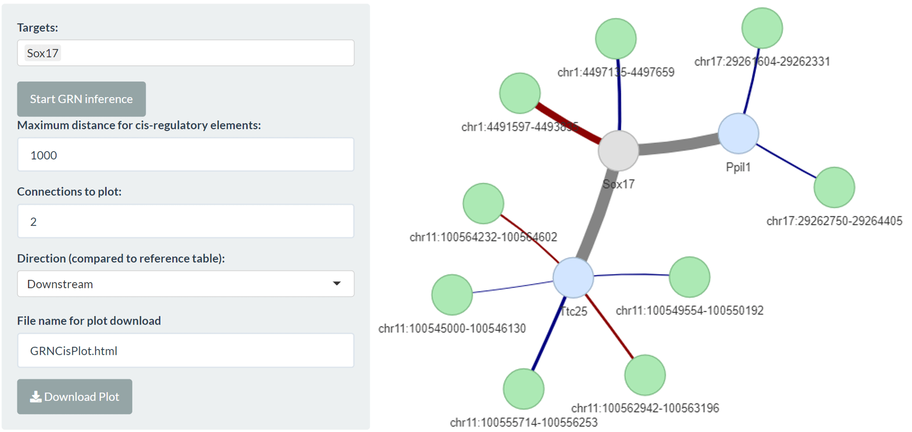
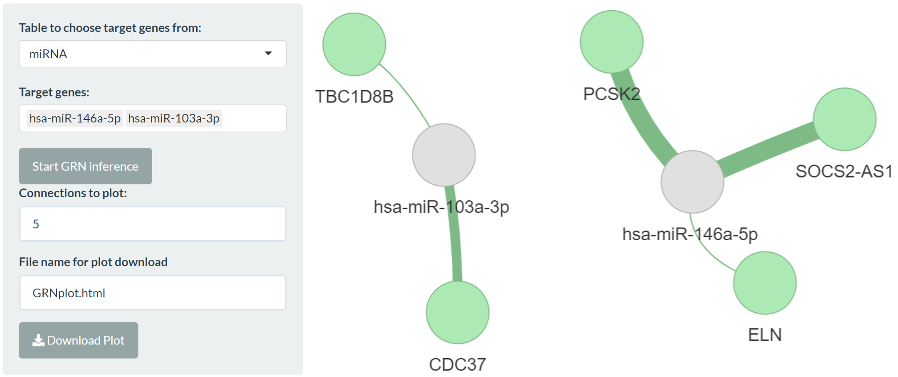
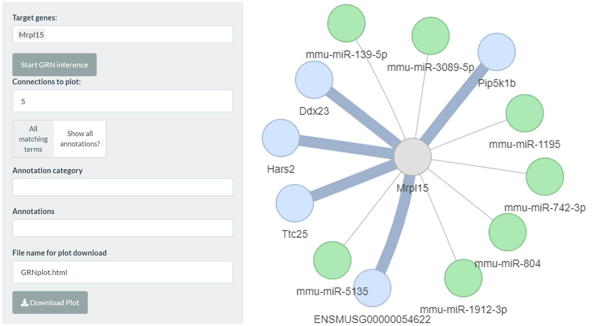
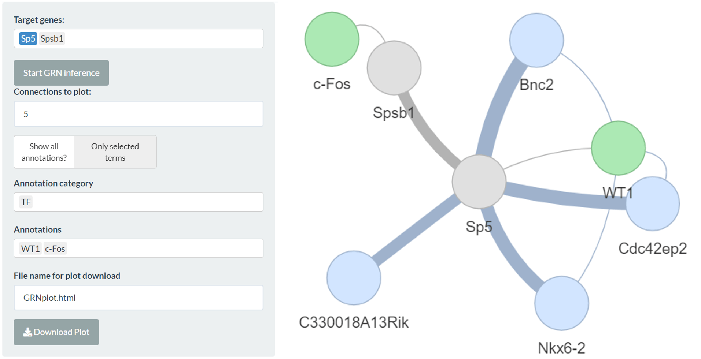

bulkAnalyseR: Integrating multi-omics or external data
Source:vignettes/IntegratingMultiomics.Rmd
IntegratingMultiomics.RmdCis-regulatory integration
bulkAnalyseR enables the integration of information involving cis-regulatory elements. A reference expression matrix is chosen, which may or may not be the central expression matrix for one of the full modality panels. A GRN is created on this expression matrix (see here for more information about GRN inference). Elements in the GRN are compared against elements from a second table which are located in proximity (e.g. 1kb, user-defined parameter); the elements in proximity are used to augment the focal GRN.
As an example, we consider a subset of the mRNAseq and h3k4me3 ChIPseq data from an experiment included in a 2019 paper by Yang et al. The preprocessed mRNAseq data is included in the bulkAnalyseR package and can be loaded by running:
exp.yang <- read.csv(
system.file("extdata", "expression_matrix_preprocessed.csv", package = "bulkAnalyseR"),
row.names = 1) %>% as.matrix
head(exp.yang)
##> SRR7624365 SRR7624366 SRR7624371 SRR7624372 SRR7624375
##> ENSMUSG00000025902 116.8333 95.33333 51.83333 69.83333 55.50000
##> ENSMUSG00000098104 101.6667 89.91667 85.00000 87.16667 81.16667
##> ENSMUSG00000103922 283.3333 277.83333 342.00000 410.50000 333.00000
##> ENSMUSG00000033845 11528.1667 10208.00000 14889.33333 15431.66667 14718.33333
##> ENSMUSG00000102275 136.5000 119.50000 165.66667 156.00000 173.00000
##> ENSMUSG00000025903 3870.8333 3391.50000 4770.83333 5288.83333 4151.50000
##> SRR7624376
##> ENSMUSG00000025902 64.83333
##> ENSMUSG00000098104 74.83333
##> ENSMUSG00000103922 296.50000
##> ENSMUSG00000033845 13848.16667
##> ENSMUSG00000102275 183.00000
##> ENSMUSG00000025903 3671.33333We define a default full modality app for the RNAseq data with an additional column relating to cis-integration so we also need to define a metadata table for the RNAseq data (our reference expression matrix):
meta <- data.frame(
srr = colnames(exp.yang),
timepoint = rep(c("0h", "12h", "36h"), each = 2)
)Our reference inputs for the RNAseq data have the following structure:
str(exp.yang)
##> num [1:19163, 1:6] 117 102 283 11528 136 ...
##> - attr(*, "dimnames")=List of 2
##> ..$ : chr [1:19163] "ENSMUSG00000025902" "ENSMUSG00000098104" "ENSMUSG00000103922" "ENSMUSG00000033845" ...
##> ..$ : chr [1:6] "SRR7624365" "SRR7624366" "SRR7624371" "SRR7624372" ...
str(meta)
##> 'data.frame': 6 obs. of 2 variables:
##> $ srr : chr "SRR7624365" "SRR7624366" "SRR7624371" "SRR7624372" ...
##> $ timepoint: chr "0h" "0h" "12h" "12h" ...To identify elements in proximity to genes in this dataset, we also need a table with chromosome, start and stop coordinates for genes. The data needed for the integration step can be found here.
gene.coord.table <- read.csv(
url('https://raw.githubusercontent.com/Core-Bioinformatics/bulkAnalyseR/master/exampledata/Yang2019_ChIP/gene_coords_GRCm38.p6.csv'),
row.names = 1)
str(gene.coord.table)
##> 'data.frame': 19163 obs. of 6 variables:
##> $ ID : chr "ENSMUSG00000025902" "ENSMUSG00000098104" "ENSMUSG00000103922" "ENSMUSG00000033845" ...
##> $ Chrom : chr "chr1" "chr1" "chr1" "chr1" ...
##> $ Start : int 4490931 4687934 4771131 4773206 4778063 4807788 4857814 4909576 4970857 5070018 ...
##> $ Stop : int 4497354 4689403 4772199 4785739 4779212 4848410 4897909 5070285 4976820 5162529 ...
##> $ Strand: chr "-" "-" "+" "-" ...
##> $ Name : chr "Sox17" "Gm6085" "Gm6123" "Mrpl15" ...For RNAseq, such a table can be produced from the reference gtf. We also need to supply the organism database, here “org.Mm.eg.db” (see here for more information).
Finally, we need information about the ChIPseq peak coordinates to compare against RNAseq gene coordinates. These can come, for example, from MACS2 peak calling output (narrowPeak files).
chip.coord.table <- read.csv(
url('https://raw.githubusercontent.com/Core-Bioinformatics/bulkAnalyseR/master/exampledata/Yang2019_ChIP/ChIP_peak_coords.csv'),
row.names = 1)
str(chip.coord.table)
##> 'data.frame': 94023 obs. of 6 variables:
##> $ ID : chr "chr1:3020816-3021086" "chr1:3027145-3027567" "chr1:3037113-3037712" "chr1:3149858-3150088" ...
##> $ Chrom : chr "chr1" "chr1" "chr1" "chr1" ...
##> $ Start : int 3020816 3027145 3037113 3149858 3343863 3531507 3621959 3670554 3671137 3671661 ...
##> $ Stop : int 3021086 3027567 3037712 3150088 3344120 3532081 3622503 3671576 3671526 3672619 ...
##> $ Strand: chr "+" "+" "+" "+" ...
##> $ Name : chr "chr1:3020816-3021086" "chr1:3027145-3027567" "chr1:3037113-3037712" "chr1:3149858-3150088" ...The two coordinate tables should always have this structure and chromosome names must match between tables.
To create the integration tab, we need to define the following tibble:
cis.integration <- tibble::tibble(
reference.expression.matrix = 'exp.yang',
reference.org.db = 'org.Mm.eg.db',
reference.coord = 'gene.coord.table',
comparison.coord = 'chip.coord.table',
reference.table.name = 'mRNAseq',
comparison.table.name = 'ChIPseq'
)Note that in this table, the names of all tables should be enclosed in quotation marks.
To create the app itself, we use the same call to generateShinyApp as here but we add the cis.integration argument with this tibble.
generateShinyApp(
expression.matrix = exp.yang,
metadata = meta,
modality = "RNA",
shiny.dir = "shiny_Yang2019_CisIntegration",
app.title = "Shiny app for visualisation of three timepoints from the Yang 2019 data",
organism = "mmusculus",
org.db = "org.Mm.eg.db",
cis.integration = cis.integration
)
shiny::runApp('shiny_Yang2019_CisIntegration')The cis-integration tab will look like this:

We could instead create an app with two modality tabs, including the ChIPseq expression matrix and cis integration with each of the mRNAseq and ChIPseq as the reference expression matrix like follows:
exp.chip <- read.csv(
url('https://raw.githubusercontent.com/Core-Bioinformatics/bulkAnalyseR/master/exampledata/Yang2019_ChIP/ChIP_expression_matrix_preprocessed.csv'),
row.names = 1) %>% as.matrix
meta.chip = data.frame(
id = colnames(exp.chip),
timepoint = c('0h','12h','36h')
)
cis.integration.2 <- tibble::tibble(
reference.expression.matrix = c('exp.yang','exp.chip'),
reference.org.db = c('org.Mm.eg.db','NULL'),
reference.coord = c('gene.coord.table','chip.coord.table'),
comparison.coord = c('chip.coord.table','gene.coord.table'),
reference.table.name = c('mRNAseq','ChIPseq'),
comparison.table.name = c('ChIPseq','mRNAseq')
)
generateShinyApp(
expression.matrix = list(exp.yang,exp.chip),
metadata = list(meta,meta.chip),
modality = c('RNA','ChIP'),
shiny.dir = "shiny_Yang2019_CisIntegration2",
app.title = "Shiny app for visualisation of three timepoints from the Yang 2019 data",
organism = list("mmusculus",NA),
org.db = list("org.Mm.eg.db",NA),
cis.integration = cis.integration.2
)
shiny::runApp('shiny_Yang2019_CisIntegration2')An example app with cis-integration can be found here.
Trans-regulatory elements
bulkAnalyseR also offers the opportunity to analyse multiple elements which are not related necessarily by proximity but by correlation. For this component, two expression matrices are required, on the same columns. A joint GRN is then calculated on the combined expression matrices and targets can be chosen from either table.
To show this functionality, we focus on the mRNA and miRNA data from a 2021 paper by Li et al. The data needed for this example can be found here.
exp.mirna <- read.csv(
url('https://raw.githubusercontent.com/Core-Bioinformatics/bulkAnalyseR/master/exampledata/Li2021_miRNA_mRNA/expression_matrix_miRNA_preprocessed.csv'),
row.names = 1) %>% as.matrix
str(exp.mirna)
##> num [1:555, 1:6] 222 472 239290 462 88611 ...
##> - attr(*, "dimnames")=List of 2
##> ..$ : chr [1:555] "hsa-let-7a-2-3p " "hsa-let-7a-3p " "hsa-let-7a-5p " "hsa-let-7b-3p " ...
##> ..$ : chr [1:6] "control_1" "control_2" "control_3" "IDD_1" ...
exp.mrna <- read.csv(
url('https://raw.githubusercontent.com/Core-Bioinformatics/bulkAnalyseR/master/exampledata/Li2021_miRNA_mRNA/expression_matrix_mRNA_preprocessed.csv'),
row.names = 1) %>% as.matrix
str(exp.mrna)
##> num [1:20609, 1:6] 132.7 78.3 123.8 89 153.7 ...
##> - attr(*, "dimnames")=List of 2
##> ..$ : chr [1:20609] "ENSG00000227232" "ENSG00000241860" "ENSG00000279457" "ENSG00000237094" ...
##> ..$ : chr [1:6] "control_1" "control_2" "control_3" "IDD_1" ...
meta.trans = data.frame(id = paste0(rep(c('control_','IDD_'),each = 3),1:3),
rep = rep(1:3,2),
type = rep(c('control','IDD'),each = 3))
meta.trans
##> id rep type
##> 1 control_1 1 control
##> 2 control_2 2 control
##> 3 control_3 3 control
##> 4 IDD_1 1 IDD
##> 5 IDD_2 2 IDD
##> 6 IDD_3 3 IDD
generateShinyApp(
shiny.dir = 'shiny_Li_2021',
app.title = 'Li 2021 Trans Regulatory Example',
modality=list('mRNA','miRNA'),
metadata = meta.trans,
expression.matrix = list(exp.mrna,exp.mirna),
org.db = list('org.Hs.eg.db',NA),
organism=list('hsapiens',NA),
trans.integration = tibble::tibble(
reference.expression.matrix='exp.mrna',
reference.org.db='org.Hs.eg.db',
comparison.expression.matrix='exp.mirna',
comparison.org.db='NULL',
reference.table.name='mRNA',
comparison.table.name='miRNA'
)
)
shiny::runApp('shiny_Li_2021')The trans integration tab for the Li 2021 data could look like:

An example app with trans-integration can be found here.
Custom integration
bulkAnalyseR further offers the option to include custom integration relating to your reference expression matrix. This could include known miRNA-mRNA target interations or known transcription factors.
To integration miRNA-mRNA target interaction information, you can use the following function to create a custom comparison table:
mirtarbase.comparison.table <- preprocess_miRTarBase(organism.code = 'mmu', org.db = 'org.Mm.eg.db')To view the available filtering options for Support Type and Experiments (validation type), run the function with the extra print arguments:
mirtarbase.comparison.table <- preprocess_miRTarBase(
organism.code = 'mmu',
org.db = 'org.Mm.eg.db',
print.support.types = TRUE,
print.validation.methods = TRUE
)Any comparison table supplied for custom integration should have these 5 columns. Reference_ID and Reference_Name should match the reference expression matrix. The final Category column allows the selection of more specific category of integration information.
To define the full app, we again use the typical Yang 2019 call to generateShinyApp but add the custom.integration parameter.
custom.integration <- tibble::tibble(
reference.expression.matrix = 'exp.yang',
reference.org.db = 'org.Mm.eg.db',
comparison.table = 'mirtarbase.comparison.table',
reference.table.name = 'RNA',
comparison.table.name = 'miRTarBase'
)
generateShinyApp(
expression.matrix = exp.yang,
metadata = meta,
modality = "RNA",
shiny.dir = "shiny_Yang2019_CustomIntegration",
app.title = "Shiny app for visualisation of three timepoints from the Yang 2019 data",
organism = "mmusculus",
org.db = "org.Mm.eg.db",
custom.integration = custom.integration
)
shiny::runApp('shiny_Yang2019_CustomIntegration')The custom integration panel for the Yang 2019 data, combined with miRTarBase information looks like:

An example app with custom integration can be found here.
Integrating enrichment information
bulkAnalyseR also facilitates the integration of miRNA and transcription factor information in the DE & enrichment GRN tab:

sessionInfo()
##> R version 4.1.1 (2021-08-10)
##> Platform: x86_64-w64-mingw32/x64 (64-bit)
##> Running under: Windows 10 x64 (build 22000)
##>
##> Matrix products: default
##>
##> locale:
##> [1] LC_COLLATE=English_United Kingdom.1252
##> [2] LC_CTYPE=English_United Kingdom.1252
##> [3] LC_MONETARY=English_United Kingdom.1252
##> [4] LC_NUMERIC=C
##> [5] LC_TIME=English_United Kingdom.1252
##>
##> attached base packages:
##> [1] stats graphics grDevices utils datasets methods base
##>
##> other attached packages:
##> [1] bulkAnalyseR_1.0.0
##>
##> loaded via a namespace (and not attached):
##> [1] tidyselect_1.1.2 xfun_0.29 bslib_0.4.0 purrr_0.3.4
##> [5] colorspace_2.0-3 vctrs_0.3.8 generics_0.1.3 htmltools_0.5.2
##> [9] yaml_2.3.5 utf8_1.2.2 rlang_1.0.6 pkgdown_2.0.6
##> [13] jquerylib_0.1.4 pillar_1.8.1 later_1.3.0 glue_1.6.2
##> [17] DBI_1.1.3 lifecycle_1.0.2 stringr_1.4.1 munsell_0.5.0
##> [21] gtable_0.3.1 ragg_1.2.2 memoise_2.0.1 evaluate_0.16
##> [25] knitr_1.40 fastmap_1.1.0 httpuv_1.6.3 fansi_1.0.2
##> [29] highr_0.9 Rcpp_1.0.8.3 xtable_1.8-4 scales_1.2.1
##> [33] promises_1.2.0.1 cachem_1.0.6 desc_1.4.2 jsonlite_1.8.0
##> [37] mime_0.12 systemfonts_1.0.4 fs_1.5.2 textshaping_0.3.6
##> [41] ggplot2_3.3.5 digest_0.6.29 stringi_1.7.6 dplyr_1.0.8
##> [45] shiny_1.7.1 grid_4.1.1 rprojroot_2.0.3 cli_3.4.1
##> [49] tools_4.1.1 magrittr_2.0.2 sass_0.4.1 tibble_3.1.6
##> [53] pkgconfig_2.0.3 ellipsis_0.3.2 assertthat_0.2.1 rmarkdown_2.16
##> [57] rstudioapi_0.14 R6_2.5.1 compiler_4.1.1